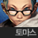
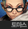
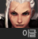
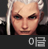
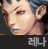
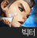
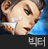
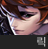
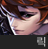

1934년 대공황의 시기 영국 남부에 갑작스레 등장한 도시 포트레너드에서 벌어진 두 초능력자 단체 헬리오스와 지하연합 간의 갈등을 배경으로 한다.
헬리오스
사이퍼즈 세계에서 지하연합과 더불어 가장 큰 능력자 단체이다. 현 대표는 브뤼노 올랑이며 초대 대표인 '명왕' 헨리 밀러가 그랑 플람이 세운 숭고한 길 재단을 기반으로 설립했다.
소속 인물


지하연합
사이퍼즈 세계에서 헬리오스와 더불어 가장 큰 능력자 단체이다. 현 수장은 앤지 헌트이며 전 수장이자 그녀의 아버지인 흑염 하이드가 특유의 카리스마로 뒷골목에서 살아가는 사람들을 모아 설립했다.
소속 인물


 
 



안타리우스
사이퍼즈 내에 등장하는 사이비 종교단체. 창시자는 구마스 노인이며 노인이 가진 액자의 힘으로 10년 사이에 엄청나게 성장했다. 사이퍼즈의 세계관에서의 메인 빌런 단체로, 사람들을 유혹하거나 납치해서 강화 능력자를 만든다고 한다. 혹은 스스로 찾아오는 경우도 있는 듯 하다.
소속 인물



검의 형제 기사단
창시자는 제레온 프리츠, 현 수장은 벨져 홀든. 황태자 시해 사건 이후, 오스트리아 호위대를 떠난 제레온이 안타리우스에 맞서 싸울 수 있는 단체를 만들기 위해 오스트리아 황실호위대 인원을 뽑아 만들었다. 제레온이 아직 정신분열증이 생기기 전, 그는 인식의 문의 힘을 얻은 벨져가 안타리우스에 맞서 싸울수 있을 것을 기대하며 그에게 기사단장 자리를 물려주었다.
소속 인물


그랑플람 재단
창시자는 장 바티스트 플람(이하 위대한 능력자 그랑플람)이며 통칭 재단으로 불리고 있다. 재단에 가입한 사람은 후원자라고 불린다. 이전에는 지중해 연안을 중심으로 활동하던 상단 '바다의 람블라'였지만, 거대 일식 발생 후 당시 바다의 람블라 수장이였던 그랑플람에 의해 능력자들의 권익을 보호하며, 비능력자와 능력자간의 조화를 이루는 세상을 건설하려 노력하는 '그랑플람 재단'으로 바뀌었다.
소속 인물


더 호라이즌
창시자는 한 명이 아니라 현 리더인 재뉴어리의 부모님과 친분이 있는 사람들이 자신들의 아이들과 함께 더 호라이즌을 만들었다. 처음엔 이름도 없이 재뉴어리의 아버지와 헨리, 캐럴라인의 할아버지인 제프 케이트 교수가 재뉴어리에게 리스트의 아이들을 한 곳에 모으는 것을 부탁함과 동시에 책임자로 임명해서 리스트에 있던 헨리, 리첼, 리사 외 능력자들과 활동한 것으로 보인다. 그 후에 그들사이에서 무언가 깨달은 바가 있었는지 그 당시 구성원들로 부모님의 지시가 아닌 자신들의 의지로 활동하기 시작한 것으로 보이며 이때부터 새로운 능력자 영입에도 힘을 쓴 것으로 보인다.
소속 인물


드로스트 가문
표면적인 수장은 로벤 드로스트이고, 진짜 수장은 디아나 드로스트이다. 네덜란드의 두터운 신망을 얻고 있는 가문이며, 수많은 염동력자들을 배출한 염동력자로 유명한 가문이다.
소속 인물
어둠의 능력자
그저 이름만 알려진 단체이다. 밝혀진 소속자는 네 명뿐이며, 목적도 밝혀지지 않았고, 정보를 남기지 않아 추적도 힘들다고 한다. 이름은 대놓고 악의 능력자 집단이지만 정작 이렇다 할 악행을 벌이지는 않았다.
소속 인물


저스티스 리그
미국의 규모가 큰 능력자 단체라는 점 외의 자세한 내용은 밝혀지지 않았다.
소속 인물
무소속
말 그대로 소속이 없는 능력자들과 비능력자들. 개인적인 사정으로 어느 조직에도 소속되어있지 않다. 대부분 각 조직의 구성원들과의 친분도 접점도 없다.
소속 인물


 

 
